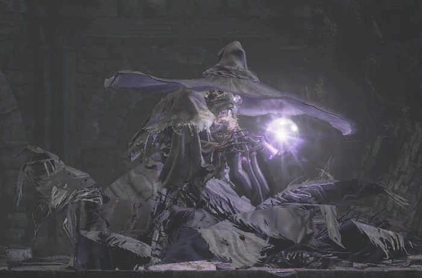
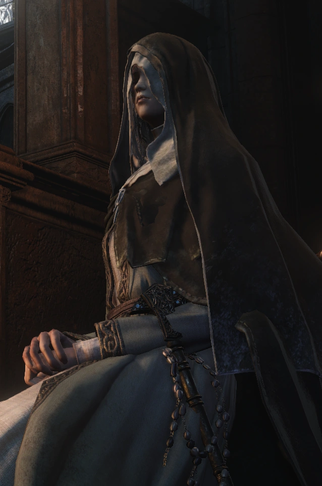
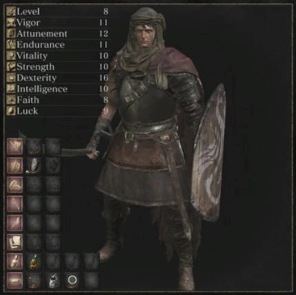
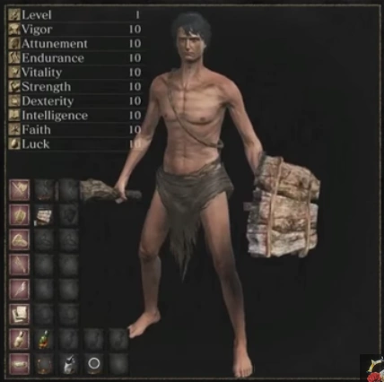

- Undead Asylum:
- A decrepit asylum teeming with undead and guarded by a great demon. It serves as the introductory area for the game.
- Firelink Shrine:
- A lush, green cliff side ruin overlooking a city below. It serves as a central hub and is the first location that is visited after escaping the Undead Asylum.
- Undead Burg:
- A fortified section of a town surrounded by large walls and watchtowers, filled with hostile undead.
- Undead Parish:
- A separate section of the Undead Burg, containing the Undead Church, along with various other buildings.
- Depths:
- A vast, dark sewer system beneath the Undead Burg, containing various tunnels and waterways.
- Blighttown:
- A toxic shantytown, built in a deep, dark swamp.
- Quelaag's Domain:
- A large mound covered in spider webs. It serves as the lair of Chaos Witch Quelaag and her sister.
- The Great Hollow:
- The hollowed out interior of an enormous Archtree, filled with dangerous Basilisks.
- Ash Lake:
- A primordial land covered in Archtrees and bodies of water. Located deep below Lordran, the long-forgotten land is almost lifeless.
- Sen's Fortress:
- A mysterious fort littered with deadly traps. Supposedly built by the ancient gods, it's the only route leading to Anor Londo.
- Anor Londo:
- A vast city located at the apex of Lordran. Once home to the gods, it lies abandoned.
- Painted World of Ariamis:
- A mysterious, bleak and snowy land. Existing as a painting in Anor Londo, it's inhabited by dangerous creatures.
- Darkroot Garden:
- A dark, dank forest located just outside the Undead Parish. Inhabited by living trees, it's also home to the Forest Hunter covenant.
- Darkroot Basin:
- A section of the Darkroot Forest connects back to the Undead Burg. It contains winding cliffside paths, Crystal Golems, and a large lake.
- Valley of Drakes:
- A narrow, treacherous valley located below Firelink Shrine. Guarded by several Drakes, it serves as an intersection to various locations.
- The Catacombs:
- A series of dark, winding tunnels, brimming with undead skeletons, necromancers, and traps.
- Tomb of the Giants:
- A pitch-black cavern deep below the land. Connecting from the Catacombs, it contains colossal skeletal creatures.
- New Londo Ruins:
- A flooded city shrouded in night. Located below Firelink Shrine, this forsaken place is crawling with the ghosts of former residents.
- The Duke's Archives:
- A grand library located at the apex of Anor Londo. Home to Seath the Scaleless and his minions.
- Crystal Cave:
- A vast cavern lined with glittering crystals and invisible bridges. Inhabited by Golems, it's also the location of Seath's source of power.
- Demon Ruins:
- A vast ruin built into the very walls of a lava-flooded cavern, deep below Lordran.
- Lost Izalith:
- A large dome-shaped construct located in the lava lake of the Demon Ruins. The birthplace of the mother of demons and pyromancy.
- Firelink Altar:
- A mysterious altar located deep beneath Firelink Shrine. It serves as a gateway to the Kiln of the First Flame.
- Kiln of the First Flame:
- The dwelling of Gwyn, Lord of Cinder, and the final location in the game. In ancient times, it was where Gwyn famously linked the First Flame and prolonged the Age of Fire.
YOU DIED !
Set in the Kingdom of Lothric, a bell has rung to signal that the First Flame, responsible for maintaining the Age of Fire, is dying out. As has happened many times before, the coming of the Age of Dark produces the undead: cursed beings that rise after death. The Age of Fire can be prolonged by linking the fire, a ritual in which great lords and heroes sacrifice their souls to rekindle the First Flame. However, Prince Lothric, the chosen linker for this age, abandoned his duty and chose to watch the flame die from afar. The bell is the last hope for the Age of Fire, resurrecting previous Lords of Cinder (heroes who linked the flame in past ages) to attempt to link the fire again; however, all but one Lord shirk their duty. Meanwhile, Sulyvahn, a sorcerer from the Painted World of Ariandel, wrongfully proclaims himself Pontiff and seizes power over Irithyll of the Boreal Valley and the returning Anor Londo cathedral from Dark Souls as a tyrant.
Getting to Siegward in the tower on Undead Settlement requires some elevator acrobatics. After you meet him for the first time, he’ll move to a wooden platform halfway up the tower. The elevators in this tower are not very straightforward either, with one going up and another going down from the same place. Once you find your way up, you’ll pass by his platform, and you might hear his signature hemming and hawing. If not, however, you will completely miss his questline and condemn him to a lifetime of stasis in front of a fire demon.

Yoel or Yuria’s sidequest requires a lot of non-intuitive actions. You won’t really even find him if you’re not one for searching every corner of the map obsessively. Or if you are put off by creepy moaning from what looks like a group of tastefully decorative corpses. But once you do talk to him, you have to go back and hollow yourself oh so many times before you reach a certain point or the quest will just end. If you succeed, however, you’ll find Yuria and have to jump through more hoops (including a particular wedding ring) all for the chance to experience a different ending that you might mess up at the last moment by resting at a bonfire.

Unlike the first two, Irina is not a hard person to find. But you can easily mess up her entire questline and cause her to get corrupted and die. Irina is one of the NPCs who you can give magic tomes to, and she will let you buy spells from it. If you give her a couple of specific books, however, it will lock you out from the good ending. And if you do give her all the correct books but don’t buy all the spells out, her quest won’t be completed. So unless you have a Gamefaqs message board guiding you, you probably won’t get this quest on your first playthrough.

The only way to initiate Heysel’s sidequest is to having your ember restored at an area near the Road Of Sacrifices, and then fighting her. Later, you have to give a particular item to a particular person and summon her for the Abyss Watchers fight, and she ends up giving you a gesture. But if you decide to pursue this quest, you will be locked out of the next NPC’s sidequest. And the game doesn’t exactly tell you as much. Unless you’ve been keeping embered all the time, you’re likely to miss her.

Sirris is easy enough to find. She just shows up in Firelink Shrine, at which point you can talk to her and begin her quest. However, if you do the steps to summon Heysel for the Abyss Watchers fight, you’ll lock yourself out of Sirris’ quest. If you don’t, you’re still going to have your work cut out for you. She has what is easily one of the most convoluted questlines in the game. Just don’t go collecting any pale tongues.

While Orbeck is not exactly hidden, he will refuse to talk to you unless you have 10 intelligence. Once you do, you have to find a few scrolls and give them to him before the Abyss Watchers fight, or he will leave forever. Also, if you have been continuing the Yuria sidequest, you’ll get a mission to kill Orbeck, which will naturally bring a stop to his questline. So it’s really easy to lock yourself out of his story and all he has to offer.

The treacherous, treacherous Patches has been in every Soulsborne game, in one form or another. His role is always to trick the player. Here, however, finding him is a lot harder than in the other games. To find Patches here, you have to turn left just before the Deacons Of The Deep fog wall to open a shortcut, then leave the cathedral completely and return through the shortcut you just opened. There, you’ll find a bridge with Siegward on it which will start Patches’ story. There’s also a chance that he won’t spawn there, and you’ll have to go through a different series of steps in Firelink to get to him.

Anri and Horace are not hard to find. However, their quest is very long, involves a series of esoteric steps, and has a diverging point. At this point, you have to choose if you want to follow her questline or get the Usurpation of Fire ending from the Yuria questline.

Name:Iudex Gundyr
Location:Cemetery of Ash
Loot: Coiled Sword
Once a champion, Gundyr arrived late to Firelink Shrine, and was greeted by a shrine without fire, and a bell that would not toll. Gundyr was bested by an unknown warrior, then became a sheath to the Coiled Sword in the hopes that someday, the First Flame would be linked once more. Gundyr thereby became a judge, awaiting the arrival of chosen ash to give onto them the Coiled Sword.
Name:Vordt of the Boreal Valley
Location: High Wall of Lothric
Loot: Soul of Boreal Valley Vordt
Vordt is a distant descendant of the ancient gods and as such he was among the Irithyllians, hybrids between the race of the gods of Anor Londo and humans, who inhabit Irithyll of the Boreal Valley, the city built for them on the ruins of Anor Londo

Name:Crystal Sage
Location: Road of Sacrifices
Loot:Soul of a Crystal Sage
The preacher twins, known better as the Crystal Sages, arrived in Lothric at an unknown time, along with numerous magics. They were said to be the successors, or at least the spiritual successors of the legendary "Big Hat" Logan, the Vinheim sorcerer who studied the paledrake, Seath the Scaleless, and his learnings, which lead to Logan's records of Crystal Sorcery, which the Sages would continue to study throughout their whole lives, and it appears that they eventually set up shop at Lothric's Grand Archives.

Name:Deacons of the Deep
Location: Cathedral of the Deep
Loot: Soul of the Deacons of the Deep Small Doll
The Deacons of the Deep are led by Archdeacon Royce, one of Aldrich's most devoted followers, alongside McDonnell and Klimt. It is mentioned that Klimt attended to Rosaria, whom he deemed as a goddess, and one day lost his faith, but the sequence of events and their causes are not certain, and whether or not he is still alive is difficult to figure.
Name:Abyss Watchers
Location: Farron Keep
Loot: Cinders of a Lord Soul of the Blood of the Wolf
The Abyss Watchers were the main component of the Undead Legion of Farron, a special fighting force formed to combat the threat of the Abyss. Taking inspiration from the Wolf Knight (Sir Artorias, the Abyss Walker), the Abyss Watchers themselves sought to utilize the techniques of Artorias, and partook of wolf blood to do so. Now equipped with the strength of Artorias, they became intensely strong and agile, fighting in a coordinated and sporadic pack akin to wolves.
Name:High Lord Wolnir
Location:Catacombs of Carthus
Loot: Soul of High Lord Wolnir
Once upon a time, each of the rightful lords of Carthus were bestowed crowns judiciously, until Wolnir brought them all to their knees,and conquered most kingdoms known to their people. Thus, the crowns of Carthus became one, and Wolnir the one High Lord.
Name:Pontiff Sulyvahn
Location:Irithyll of the Boreal Valley
Loot: Soul of Pontiff Sulyvahn
Though little is certain regarding Sulyvahn's true nature, The Ashes of Ariandel expansion reveals that Sulyvahn was born in the Painted World of Ariandel. From the unused dialogue in the Painted World, as well as the tree-like motifs visible on Sulyvahn himself, one can surmise that he is the son of the feral Tree Woman found in the painting. Despite being born and raised inside the painting, he had not yet experienced the loss or despair that most residents of the painting had prior to their arrival. As such, he had no meaningful connection to the Painted World, and subsequently went on an indefinite pilgrimage outside the painting to the wider world, forsaking the frost sorceries that Ariandel had pioneered, in favor of more esoteric magic.
Name:Aldrich, Devourer of Gods,
Location:Anor Londo
Loot:Cinders of a Lord Soul of Aldrich
Formerly a holy cleric, he began to foresee an age of the "deep sea," where the dregs of the human soul fall to their lowest depths and become the shackles which bind the world. Through these visions, Aldrich was able to reach a level of the Dark generally inaccessible to humanity, which subsequently came to be known as the "Deep". Aldrich eventually developed a habit of consuming humans, an act in which he delighted. His cannibalism allowed him to grow more and more powerful, so he was chosen by the Church of White as the next Lord of Cinder despite his corruption, as he was not chosen for his worthiness, but for the power he held. Because of this, he was allowed to indulge in his vices and provided him with a steady stream of sacrifices, an operation overseen by Archdeacon McDonnell and Archdeacon Royce.
Name:Yhorm the Giant
Location:Profaned Capital
Loot: Soul of Yhorm the Giant Cinders of a Lord
Long ago the grand giant Yhorm, the descendant of an ancient conqueror, was asked to lead the people once subjugated, serving as both their blade and shield. When there were those who doubted him, he gave them a giant-slaying sword, to show his trustworthiness. He risked everything for his people in the frontlines, fighting valiantly as a one-man vanguard. It is stated that he lost someone dear to him and, as a result, he forsook his greatshield. Afterwards, he notched his machete to allow for two hand use, giving him an even more ferocious fighting style. At some point, "lonely" Yhorm befriended Siegward of Catarina, who became a dear friend of his.
Name:Dancer of the Boreal Valley
Location:High Wall of Lothric
Loot: Soul of the Dancer
The Dancer is a direct descendant of Gwynevere, Princess of Sunlight and as such she was among the Irithyllians, hybrids between the race of the gods of Anor Londo and humans, who inhabit Irithyll of the Boreal Valley, the city built for them on the ruins of Anor Londo
Name:Dragonslayer Armour
Location:Lothric Castle
Loot:Soul of Dragonslayer Armour
A suit of armor that belonged to a dragonslayer from times long past. It is controlled by the Pilgrim Butterflies that soar high above Lothric Castle and guard the entrance to the Grand Archives. It wields a gigantic shield and a greataxe infused with lightning.
Name:Lorian, Elder Prince and Lothric, Younger Prince
Location:Grand Archives
Loot:Soul of the Twin Princes
Lothric and Lorian are the sons of King Oceiros and the Gwynevere, the Queen of Lothric. The eldest, Lorian was once a mighty knight who single-handedly defeated the Demon Prince, staining his sword with the power of fire.. The royal family, specifically that of Oceiros' rule, desired to create a child so strong that it could be the perfect candidate to link the First Flame while surviving as a Lord of Cinder. But it is said that when they could not biologically produce a strong enough heir, the family committed an unnamed deed so heinous and foul that it cursed Lothric..
Name:The Nameless King
Location:Archdragon Peak
Loot:Soul of the Nameless King
The Nameless King is the firstborn child of Gwyn, Lord of Sunlight and one of the deities who resided in Anor Londo during the Age of Fire. He was worshiped by the humans as the "god of war".The Nameless King was a dragon-slaying god of war in the Age of the Gods and heir to lightning, until he sacrificed everything to ally with the ancient dragons. He tamed a Stormdrake and formed a close bond with it, leading it to countless battles. He is a former king he had infact ruled on Anor Londo after the departure of Lord Gwyn for the Kiln, although he was later banished from the realm and suffered a damnatio memoriae.
Name: Champion Gundyr
Location:Untended Graves
Loot: Soul of Champion Gundyr
Gundyr was once a champion like the Ashen One, but when he arrived at Firelink Shrine to assume his duty, it was too late; his Fire Keeper was long dead and the flame had already faded. When he was defeated by an unknown warrior, he became a sheath to the Coiled Sword to test future champions as the Iudex Gundyr, Judge of Ash.
Name:Oceiros, the Consumed King
Location:Consumed King's Garden
Loot:Soul of Consumed Oceiros
Oceiros was the former king of Lothric who sought to achieve great power through harnessing his royal blood. He discovered the Grand Archives and uncovered Big Hat Logan's notes on gaining immortality, which in turn were taken from the research of Seath the Scaleless. Like his predecessors, Oceiros was driven insane by the Paledrake's writings and chose to follow the path of the dragon, his devotion transforming him into a twisted abomination.
Name:Old Demon King
Location:Smouldering Lake
Loot:Soul of the Old Demon King
The Old Demon King was one of the many demons born from the Chaos Flame, and according to its soul's description, was the last remaining demon to have been alive before the Chaos of Izalith was extinguished, making it one of the oldest living beings in existence by the time of Dark Souls 3. After the destruction of the Bed of Chaos, the line of demons began to decline with no means of maintaining it. In spite of this mass extinction, the Demon King persisted until the events of Dark Souls 3, along with the Demon in Pain and Demon from Below (one of which will be reborn as the Demon Prince before ultimately dying). With the Chaos Flame extinguished, it has slowly withered away. When the King's health falls low enough, its inner fire will extinguish and it will kneel over helplessly, gasping and exhausted, perhaps hinting at its truly ancient age.
Name:Curse-rotted Greatwood
Location:Undead Settlement
Loot:Transposing Kiln Soul of the Rotted Greatwood
The Greatwood was once a spirit tree which the residents of the Undead Settlement would use in desperation to seal away the worst of their curses. However, these curses eventually took their toll on the tree, creating this abomination.

Name:Soul of Cinder
Location:Kiln of the First Flame
Loot:Soul of the Lords
Soul of Cinder is an amalgamation of previous Lords of Cinder such as Lord Gwyn and the Chosen Undead (assuming they survive and manages to link the flame in their world), and every other character who has ever linked the First Flame. This is confirmed by its Japanese name, Incarnation of Kings (王たちの化身, lit. Outachi no Keshin), as well as the description from the Soul of the Lords. As such, it wields the combined abilities, weapons, and magic of its components, giving him tremendous power.
Name:Champion's Gravetender and Gravetender Greatwolf
Location:Painted World of Ariandel
Loot:Champion's Bones Valorheart
Long ago, an Undead declared a tournament in which their fellow cursed souls would battle to the repeated death, with their worth being measured in deaths. This was seen as a gift to the Undead, who go hollow without a purpose, and a fight with no end was considered by some to be a glorious use of their immortality.

Name:Sister Friede
Location:Painted World of Ariandel
Loot:Soul of Sister Friede Titanite Slab
Friede is the eldest of the three sisters who founded the Sable Church of Londor, the others being Yuria and Liliane. Sister Friede is an Unkindled, suggesting that she attempted to link the First Flame or usurp it but failed, resulting in her being resurrected as ash.Having abandoned the Sable Church, she happened upon Ariandel's Painted World. There, she tricked Father Ariandel by convincing him that the only way to preserve the Painted World was by suppressing the fire with his own blood to prevent it from being burned to the ground and resulting in the rot that afflicts it.
Name:Demon in Pain and Demon from Below
Location:The Dreg Heap
Loot:-
The Chaos Flame, like the First Flame that it was unable to replace, is capable of being rekindled by a champion demon of vast power. Such a so-called "prince" went to face Lorian, eldest son of the Lothric royal family, and was defeated in combat. But the race of demons shares memory with each other, and those that remembered the power and determination of the Demon Prince share in this essence, so that even the last demon alive can rekindle the Chaos Flame.
Name:Halflight, Spear of the Church
Location:The Ringed City
Loot:Filianore's Spear Ornament Titanite Slab
The Spear of the Church is a servant of Judicator Argo, and works to preserve Filianore's slumber. One of the last recorded warrior among them was a young man named Halflight, a former missionary from an ancient land of sorcery, who decided to stay behind and defend the church.
Name:Darkeater Midir
Location:The Ringed City
Loot:Soul of Darkeater Midir Spears of the Church
A descendant of the Archdragons and raised by the gods themselves, Midir was tasked with fighting against the abyss and its creations. His immortality enables him to perform his duties without end, even after the gods have long since perished. But his task has rendered him damaged beyond repair, as the dark has seeped into him and infected him (his title implies that he actually consumed potent sources of dark), and forms black crystals. It is not exactly clear whether or not he has been fully consumed, but he clearly feels the effects, able to use the dark in combat.
Name:Slave Knight Gael
Location:Cathedral of the Deep Painted World of Ariandel (summon) The Dreg Heap (summon)
Loot:-
Believed to reside in the painting, he acted as some parental figure to The Painter, who calls him her uncle. It is believed that he departed the painting after she was locked away, taking the rotted remains of the physical portal with him, attempting to find another Ashen One to complete the prophecy that would burn away the rotted world so that the Painter could replace it.
Classes in Dark Souls determine the starting Stats and Equipment of the player. There are 10 Classes in Dark Souls that the player can begin the game with. They are listed below: Classes do not determine what weapons, items, armor, or spells your character is able to use, they only determine what your character starts the game with. As you progress through the game and raise your levels, your character can potentially take up any role regardless of class. In addition to choosing a class, players can choose a gift to begin the game with. All gifts can be found in the game later on, but taking one here can let the player enjoy a benefit they wouldn't normally have until much later. A first time player should be careful about choosing gifts that will let them enter end-game areas from the start of the game such as the Master Key, since they could potentially end up stranded in a very difficult area without the knowledge or equipment to get back out. Note that the Master Key is infinitely reusable, and the Thief starting class begins the game with one already. Taking a second Master Key as a Thief is a waste of a gift. The cost of raising a level increases as your character's level increases. The amount of souls each level costs is the same for all classes, though classes begin at different levels. For example, a character that starts at level 1 may find leveling up to be extremely affordable, but the character who starts at level 10 didn't have to pay anything to get to that point. When the level 1 character reaches level 10, going from 10 to level 11 will cost exactly the same amount of souls as it would for the character who started at level 10. Because of this, starting at a lower level actually ends up costing more overall, however the player will be able to put their stats exactly where they want them instead of starting with a more pre-determined kit. The starting level of a character ignores the Resistance stat, so characters with high resistance start at lower levels than they would normally have otherwise.
Knight
|
5 |
|
|
|
|
|
|
|
|
10 |
|
| 0 |
Wanderer
|
3 |
|
|
|
|
|
|
|
|
12 |
|
| 0 |
Thief
|
5 |
|
|
|
|
|
|
|
|
10 |
|
| 0 |
Bandit
|
4 |
|
|
|
|
|
|
|
|
11 |
|
| 0 |

Pyromancer
|
1 |
|
|
|
|
|
|
|
|
12 |
|
| 0 |
Cleric
|
2 |
|
|
|
|
|
|
|
|
11 |
|
| 0 |
Deprived
|
6 |
|
|
|
|
|
|
|
|
11 |
|
| 0 |
| Class Characteristics | LV |
VIT |
ATT |
END |
STR |
DEX |
RES |
INT |
FTH |
HUM |
TOT |
| Warrior | 4 | 11 | 8 | 12 | 13 | 13 | 11 | 9 | 9 | 0 | 86 |
| Knight | 5 | 14 | 10 | 10 | 11 | 11 | 10 | 9 | 11 | 0 | 86 |
| Wanderer | 3 | 10 | 11 | 10 | 10 | 14 | 12 | 11 | 8 | 0 | 86 |
| Thief | 5 | 9 | 11 | 9 | 9 | 15 | 10 | 12 | 11 | 0 | 86 |
| Bandit | 4 | 12 | 8 | 14 | 14 | 9 | 11 | 8 | 10 | 0 | 86 |
| Hunter | 4 | 11 | 9 | 11 | 12 | 14 | 11 | 9 | 9 | 0 | 86 |
| Sorcerer | 3 | 8 | 15 | 8 | 9 | 11 | 8 | 15 | 8 | 0 | 82 |
| Pyromancer | 1 | 10 | 12 | 11 | 12 | 9 | 12 | 10 | 8 | 0 | 84 |
| Cleric | 2 | 11 | 11 | 9 | 12 | 8 | 11 | 8 | 14 | 0 | 84 |
| Deprived | 6 | 11 | 11 | 11 | 11 | 11 | 11 | 11 | 11 | 0 | 88 |